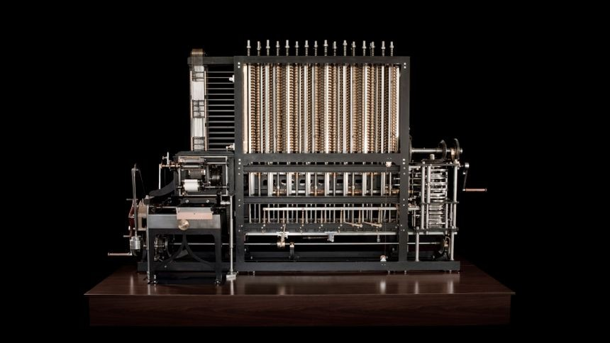
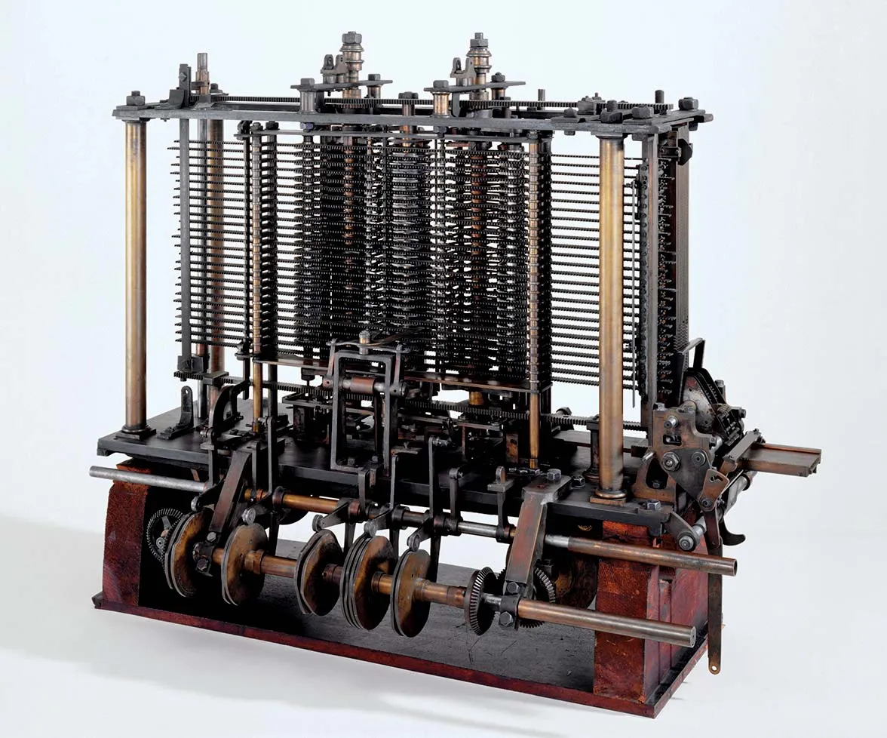

b) Napier's Bone: Napier's bones is a manually-operated calculating device created by John Napier of Merchiston, Scotland for the calculation of products and quotients of numbers. The method was based on lattice multiplication, and also called 'rabdology', a word invented by Napier. Napier published his version in 1617. printed in Edinburgh, dedicated to his patron Alexander Seton. Using the multiplication tables embedded in the rods, multiplication can be reduced to addition operations and division to subtractions. Advanced use of the rods can extract square roots. Napier's bones are not the same as logarithms, with which Napier's name is also associated, but are based on dissected multiplication tables.The complete device usually includes a base board with a rim; the user places Napier's rods inside the rim to conduct multiplication or division. The board's left edge is divided into nine squares, holding the numbers 1 to 9. In Napier's original design, the rods are made of metal, wood or ivory and have a square cross-section. Each rod is engraved with a multiplication table on each of the four faces. In some later designs, the rods are flat and have two tables or only one engraved on them, and made of plastic or heavy cardboard. A set of such bones might be enclosed in a carrying case.A rod's face is marked with nine squares. Each square except the top is divided into two halves by a diagonal line from the bottom left corner to the top right. The squares contain a simple multiplication table. The first holds a single digit, which Napier called the 'single'. The others hold the multiples of the single, namely twice the single, three times the single and so on up to the ninth square containing nine times the number in the top square. Single-digit numbers are written in the bottom right triangle leaving the other triangle blank, while double-digit numbers are written with a digit on either side of the diagonal.If the tables are held on single-sided rods, 40 rods are needed in order to multiply 4-digit numbers – since numbers may have repeated digits, four copies of the multiplication table for each of the digits 0 to 9 are needed. If square rods are used, the 40 multiplication tables can be inscribed on 10 rods. Napier gave details of a scheme for arranging the tables so that no rod has two copies of the same table, enabling every possible four-digit number to be represented by 4 of the 10 rods. A set of 20 rods, consisting of two identical copies of Napier's 10 rods, allows calculation with numbers of up to eight digits, and a set of 30 rods can be used for 12-digit numbers.

c) Slide Rule:The slide rule is a mechanical analog computer which is used primarily for multiplication and division, and for functions such as exponents, roots, logarithms, and trigonometry. It is not typically designed for addition or subtraction, which is usually performed using other methods. Maximum accuracy for standard linear slide rules is about three decimal significant digits, while scientific notation is used to keep track of the order of magnitude of results. Slide rules exist in a diverse range of styles and generally appear in a linear, circular or cylindrical form, with slide rule scales inscribed with standardized graduated markings. Slide rules manufactured for specialized fields such as aviation or finance typically feature additional scales that aid in specialized calculations particular to those fields. The slide rule is closely related to nomograms used for application-specific computations. Though similar in name and appearance to a standard ruler, the slide rule is not meant to be used for measuring length or drawing straight.At its simplest, each number to be multiplied is represented by a length on a pair of parallel rulers that can slide past each other. As the rulers each have a logarithmic scale, it is possible to align them to read the sum of the numbers' logarithms, and hence calculate the product of the two numbers.The English mathematician and clergyman Reverend William Oughtred and others developed the slide rule in the 17th century based on the emerging work on logarithms by John Napier. Before the advent of the electronic calculator, it was the most commonly used calculation tool in science and engineering.The slide rule's ease of use, ready availability, and low cost caused its use to continue to grow through the 1950s and 1960s, even as electronic computers were being gradually introduced. The introduction of the handheld electronic scientific calculator around 1974 made slide rules largely obsolete, and most suppliers left the business.
d) Pascaline: Pascal's calculator (also known as the arithmetic machine or Pascaline) is a mechanical calculator invented by Blaise Pascal in 1642. Pascal was led to develop a calculator by the laborious arithmetical calculations required by his father's work as the supervisor of taxes in Rouen. He designed the machine to add and subtract two numbers directly and to perform multiplication and division through repeated addition or subtraction. Pascal's calculator was especially successful in the design of its carry mechanism, which adds 1 to 9 on one dial, and carries 1 to the next dial when the first dial changes from 9 to 0. His innovation made each digit independent of the state of the others, enabling multiple carries to rapidly cascade from one digit to another regardless of the machine's capacity. Pascal was also the first to shrink and adapt for his purpose a lantern gear, used in turret clocks and water wheels. This innovation allowed the device to resist the strength of any operator input with very little added friction.Pascal designed the machine in 1642. After 50 prototypes, he presented the device to the public in 1645, dedicating it to Pierre Séguier, then chancellor of France. Pascal built around twenty more machines during the next decade, many of which improved on his original design. In 1649, King Louis XIV of France gave Pascal a royal privilege (similar to a patent), which provided the exclusive right to design and manufacture calculating machines in France. Nine Pascal calculators presently exist; most are on display in European museums.Many later calculators were either directly inspired by, or shaped by the same historical influences which led to, Pascal's invention. Gottfried Leibniz invented his Leibniz wheels after 1671, after trying to add an automatic multiplication feature to the Pascaline. In 1820, Thomas de Colmar designed his arithmometer, the first mechanical calculator strong enough and reliable enough to be used daily in an office environment. It is not clear whether he ever saw Leibniz's device, but he either re-invented it or utilised Leibniz's invention of the step drum

e) Stepped Reckoner:The stepped reckoner, also known as Leibniz calculator, was a mechanical calculator invented by the German mathematician Gottfried Wilhelm Leibniz around 1672 and completed in 1694.The name comes from the translation of the German term for its operating mechanism, Staffelwalze, meaning "stepped drum". It was the first calculator that could perform all four arithmetic operations. Its intricate precision gearwork, however, was somewhat beyond the fabrication technology of the time; mechanical problems, in addition to a design flaw in the carry mechanism, prevented the machines from working reliably. Two prototypes were built; today only one survives in the National Library of Lower Saxony (Niedersächsische Landesbibliothek) in Hanover, Germany. Several later replicas are on display, such as the one at the Deutsches Museum, Munich. Despite the mechanical flaws of the stepped reckoner, it suggested possibilities to future calculator builders. The operating mechanism, invented by Leibniz, called the stepped cylinder or Leibniz wheel, was used in many calculating machines for 200 years, and into the 1970s with the Curta hand calculator.
g) Babbage's Engine (Difference Engine and Analytical Engine):THE BABBAGE ENGINE Charles Babbage and his Difference Engine Charles Babbage (1791-1871), computer pioneer, designed the first automatic computing engines. He invented computers but failed to build them. The first complete Babbage Engine was completed in London in 2002, 153 years after it was designed. Difference Engine No. 2, built faithfully to the original drawings, consists of 8,000 parts, weighs five tons, and measures 11 feet long
A difference engine is an automatic mechanical calculator designed to tabulate polynomial functions. It was designed in the 1820s, and was first created by Charles Babbage. The name, the difference engine, is derived from the method of divided differences, a way to interpolate or tabulate functions by using a small set of polynomial co-efficients. Some of the most common mathematical functions used in engineering, science and navigation, were, and still are computable with the use of the difference engine's capability of computing logarithmic and trigonometric functions, which can be approximated by polynomials, so a difference engine can compute many useful tables of numbers.

The Analytical Engine was a proposed mechanical general-purpose computer designed by English mathematician and computer pioneer Charles Babbage. It was first described in 1837 as the successor to Babbage's difference engine, which was a design for a simpler mechanical calculator.The Analytical Engine incorporated an arithmetic logic unit, control flow in the form of conditional branching and loops, and integrated memory, making it the first design for a general-purpose computer that could be described in modern terms as Turing-complete.In other words, the structure of the Analytical Engine was essentially the same as that which has dominated computer design in the electronic era. The Analytical Engine is one of the most successful achievements of Charles Babbage.Babbage was never able to complete construction of any of his machines due to conflicts with his chief engineer and inadequate funding. It was not until 1941 that Konrad Zuse built the first general-purpose computer, Z3, more than a century after Babbage had proposed the pioneering Analytical Engine in 1837

However, Babbage never completed the analytical engine, but his proposal for this device reviewed the basic elements of modern computer such as input/output, storage, processor and control unit. In other words he discoverd the principle for the construction of general purpose fully programmable automatic mechanical computer, on which the modern electronic computers are based. So, Babbage is known as "father of modern computer".
h) Tabulating machine: Tabulating machine was made by Dr. Herman Hollerith. He worked in us census bureau. By using the similar ideas of jacquard's loom, he made tabulating machine in 1886 AD. It could process on the punch card and perform the census calculation faster. He established his own comapny called Tabulating Machine Comapny (TMC),later TMC was integrated with other companies and established IBM in 1923 AD. International Business Machine (IBM) is the largest computer manufacturing company in the world even today.